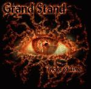

| Artist: | Grand Stand |
| Title: | Tricks Of Time |
| Label: | Progress Records PRCD 009 |
| Length(s): | ?? minutes |
| Year(s) of release: | 2002 |
| Month of review: | [01/2003] |
| 1) | Jurassic Spark | 11.24 |
| 2) | Words Are Not Enough | 4.01 |
| 3) | Waiting For Water | 9.39 |
| 4) | Empty Barrels Rattle The Most | 9.34 |
| 5) | Old Man's Tale | 16.00 |
On the shortish instrumental (four minutes IS short for these guys) Words Are Not Enough. Piano and a rather restful atmosphere interlaced with a flurry of short other pianic lines. The mid-tempo guitar sounds a bit bluesy, the drummer keeps a low profile, to insert a percussion break here and there for variation. The piano parts are nice, but the guitar/bass dominated parts do not do that much for me. They sound quite warm and such, but simply meander around a bit without actually amounting to much.
With Waiting For Water we enter a dreamy place filled with soothing keyboards. The vocal part is also a soothin one, somewhat sad, making me think back to Genesis' Trick Of The Tail or Afterglow. Do not expect the same quality, who would?, but there is plenty to get nostalgic about.
Empty Barrels Rattle The Most is an uplifting instrumental, one might say in the vein of Pendragon, with some nice guitar bits. On the whole quite laid back, as is actually of their material, and a whole lot interesting than the first instrumental. Again, nothing new under the sun, and at times I have to strain to myself to think, hey where did I hear that before? However, I can not be absolutely sure that it wasn't one of the previous spins I gave this album, so I guess they sure worked it right into their own repertoire alright. Halfway we get some piping keyboards, a bit classical in feel. Very melancholic this. The follow up passage is one of the most energetic on the album, veyr urgent, very good. The concluding guitar solo is one of those overpowering ones, to delve into.
The final track is the sixteen minute epic Old Mans Tale. We open instrumentally with acoustic guitar and fluting keyboards. Again we move into a bluesy piece (see track two) with the guitar leading. I prefer the lush symphonic follow-up, and also the powerful percussive vocal part which follows that. I am thinking of the drive that Marathon put into their music. Again, a very good vocal melody, with also plenty of variation. Not simply one striking one, and then the rest filler, no, the vocal melodies are all worth hearing. Add to this some shining guitar parts and some meandering squeaky keyboards (almost jazzy and swinging), and we have a very nice epic right here (although I am tempted to say they do take a tad long in the middle instrumental parts, with a strong sense of optimism notwithstanding a sad undertone.
In case you run into problems playing this cd: try it on another cd player. The cd has a bonus track before the first track. I have not been able to access it, and my Macintosh iBook got very sick of it due to a firmware deficiency, but it played fine at least on all my other cd players.